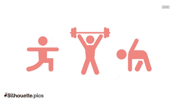
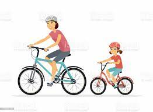

A little bit about me!
Workout

When I am not coding, I love to workout that includes interval training and heart-rate based HIIT total body group workout. This workout helps me to relax and decrease my stress levels. Fun fact, exercise releases happy hormones that helps you to be strong mentally and physically. This workout especially made me take challenges out of my comfort zone. I live in the midwest area at the moment, and this workout has made me fall in love with cold winter weather.
This workout include rower, treadmill and core workout. This exercise works on entire body and since this is a group exercise guided by a coach, we feel motivated throughout the session
This is an intense workout, I make sure to do lot of stretching before and after workout and also inorder to maintain healthy weight I plan my meals. I also include pre and post workout smoothies, that will help me fight my hunger cravings or lethargy during the workout
Cycling

I also like to spend time with my family by going out for a bike ride in the trails and around my neighborhood in Summers. We also participated in 20 mile bike ride for a MACC fund organization at my company. Its always nice to spend quality time with family.
These are the 5 fun facts about biking:
- The longest “tandem” bicycle seated 35 people, it was more than 20 meters long
- You can fit about 15 bicycles in the same space that one car occupies
- It is 20 times cheaper to maintain a bicycle than a car
- If the number of cyclists was tripled, the rate of motorist-bicyclist accidents would be cut in half
- The world manufactures about 100 million bikes each year
Baking
I love to bake for my family. We love eating homemade baked goodies like cakes, cupcakes, puddings, breads.
Our family's favorite chocolate avacado pudding. This recipe takes less than 5 minutes to make and requires very less ingredients but I promise it tastes so good you would want to make it breakfast, lunch and dinner. Added bonus, its healthy!
Steps to make : Blend avocados, cocoa powder, brown sugar, coconut milk, vanilla extract, and cinnamon in a blender until smooth. Refrigerate pudding until chilled, about 30 minutes.